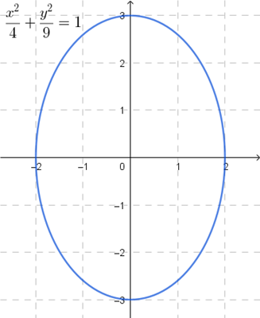
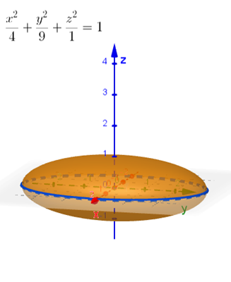
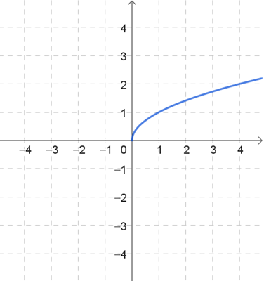
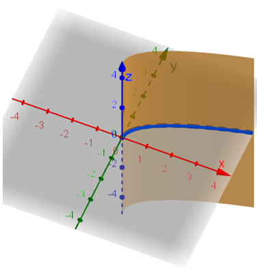
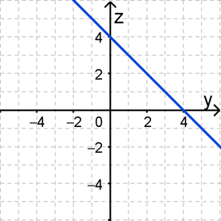
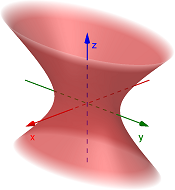
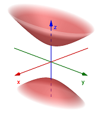
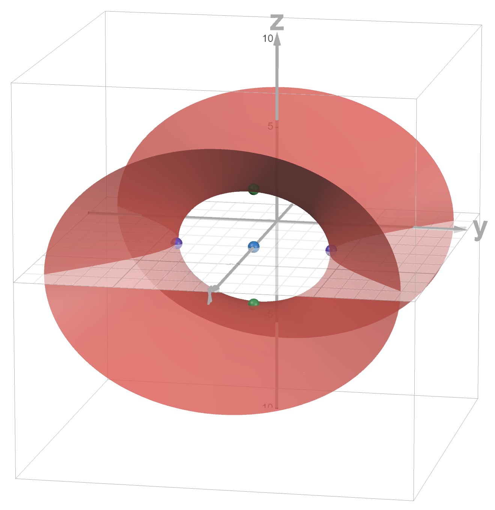
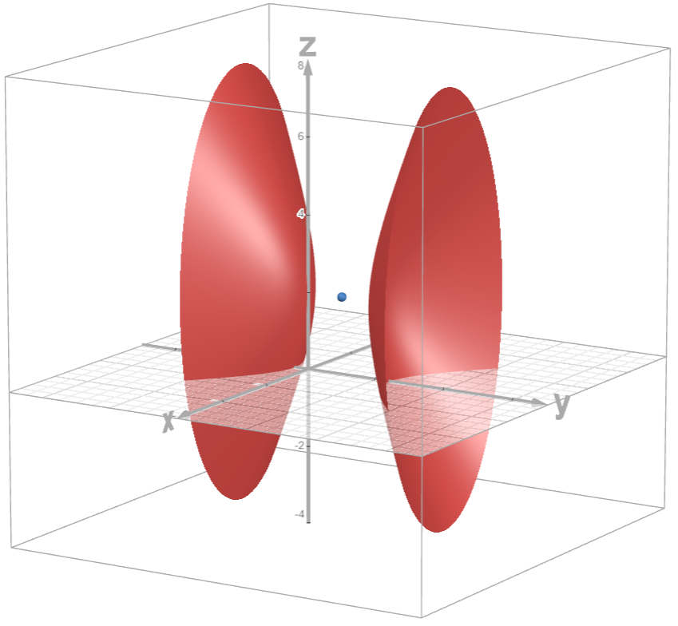

Cross Product, Planes & Surfaces
Vectors and the Geometry of Space
Vectors and the Geometry of Space
Recall that in precalculus we studied different types of conic sections (circle, ellipse, hyperbola, and parabola) in the \(xy\)-plane. We now want to extend these conics into surfaces in 3D space. For example, an ellipse in the \(xy\)-plane would be similar to an ellipsoid in 3D space.


Notice the similarities in the equations and graphs above. The ellipse and ellipsoid both extend along the \(x\)-axis to \(\pm 2\), and both extend along the \(y\)-axis to \(\pm 3\). While the ellipse is bound within the \(xy\)-plane, the ellipsoid extends along the \(z\)-axis to \(\pm 1\). The ellipse has vertices \(\left(\pm 2, 0\right)\) and \(\left(0, \pm 3\right)\). The ellipsoid has vertices \(\left(\pm 2,0,0 \right)\), \(\left( 0,\pm 3,0 \right)\), and \(\left( 0,0,\pm 1 \right)\).
Before we get to actually defining all our surfaces, there are a couple building blocks that we need to cover first. These will provide a sort of skeletal structure or scaffolding for how we can visualize, describe, and draw the surfaces.
The most basic type of surface is called a cylinder. By the term cylinder, we do not mean a right circular cylinder like a soup can. Rather, a cylinder is a surface made up of all the points on all the lines parallel to a given line that passes through a specified plane curve.
Use the GeoGebra applet below to explore the definition of a cylinder. You may want to follow these steps. You can click-and-drag to rotate the view around the origin.
Cylindrical surfaces tend to be easy to recognize when their curve is contained within one of the coordinate planes because the curve equation will only contain two of the three coordinate variables. For example, consider the equation \(y = \sqrt{x}\) which is is a curve contained within the \(xy\)-plane and cylindrical surface parallel to the \(z\)-axis. It stretches vertically along the \(z\)-axis because the equation \(y = \sqrt{x}\) must remain true for every value of \(z\), or for \(\text{-}\infty \lt z \lt \infty\).


Exploration: Go to GeoGebra Classic 3D (new window) [https://www.geogebra.org/classic#3d] and graph the following cylinders. To graph a cylinder in GeoGebra, just type the given equation into the Input space.
Do the graphs you see make sense to you in terms of the given equations?
A trace of a surface is a point or curve formed by the intersection of a surface with a plane that is parallel to one of the coordinate planes. You could think of a trace as a cross-section of the surface.
Exploration: Use the Geogebra graph below to explore the definition of a trace. You may want to follow the steps below. You can click-and-drag to rotate the view around the origin.
The idea with traces is that we could determine a collection of the intersecting curves for planes parallel to a coordinate plane and sketching those traces would create a skeletal graph of the surface. In the above graph, the paraboloid equation was \(z = x^2 + y^2 - 1\). We could start by determining the trace equations for the coordinate planes.
Now let's look at trace equations for planes parallel to the xy-plane.
In practice, once we figure out all these traces, we could then sketch them on a graph to see what the original surface would look like.
Self-Check #4: Which surface would have the following \(yz\)-trace? (Select the most appropriate response.)

(Answer: B) -- The \(yz\)-trace is a curve in the \(yz\)-plane, which is the plane where \(x = 0\). If we plug \(0\) into the \(x\) in each equation, we get the following.
\[\begin{align*} 0 + y - z &= 4 \\[4pt] 0 + y + z &= 4 \\[4pt] 0 - y + z &= 4 \\[4pt] 0 - y - z &= 4 \end{align*}\]Only the second equation \(y + z = 4\) simplifies to \(z = 4 - y\) which is a line in the \(yz\)-plane with a \(z\)-intercept of 4 and a slope of \(\text{-}1\).
Here are the common surfaces that you should be familiar with, which we call quadric surfaces.

The graph is oriented along the major axis which is parallel to the variable in the equation with largest denominator. All traces are ellipses.
If \(a = b = c\), then the ellipsoid is a sphere.
The vertices are at \((\pm a, 0, 0)\), \((0, \pm b, 0)\), and \((0, 0, \pm c)\).

The graph is oriented along the central axis of symmetry which is parallel to the coordinate axis of the variable in the equation with a negative coefficient.
Traces parallel to the axis of symmetry are hyperbolas and traces perpendicular to the axis of symmetry are ellipses.

The graph is oriented along the central axis of symmetry which is parallel to the coordinate axis of the variable in the equation with a positive coefficient.
Traces parallel to the axis of symmetry are hyperbolas and traces perpendicular to the axis of symmetry are ellipses.

The graph is oriented along the central axis of symmetry which is parallel to the coordinate axis of the isolated variable in the equation.
Traces parallel to the axis of symmetry are hyperbolas or two intersecting lines and traces perpendicular to the axis of symmetry are ellipses.

The graph is oriented along the central axis of symmetry which is parallel to the coordinate axis of the isolated variable in the equation.
Traces parallel to the axis of symmetry are parabolas and traces perpendicular to the axis of symmetry are ellipses.

The graph is oriented along the central axis of symmetry which is parallel to the coordinate axis of the isolated variable in the equation.
Traces parallel to the axis of symmetry are parabolas opening in the signs of the square variables and traces perpendicular to the axis of symmetry are hyperbolas.
You may use the GeoGebra graph below to further explore the graphs illustrated above.
Let's look at a few examples of quadric surfaces.
Example: Determine the type of quadric surface given by the equation below. If applicable, state the direction of its orientation. Determine the center and any vertices. Then sketch a graph.
\[-\frac{(x-3)^2}{4} + \frac{y^2}{16} + \frac{z^2}{9} = 1\]All 3 variables in this equation are squared and the equation is equal to 1, which fits the form of either an ellipsoid or a hyperboloid of 1 or 2 sheets. Since one of the variables is negative, the \(x\)-variable, we can conclude that this is a hyperboloid of 1 sheet that is oriented in the \(x\)-direction, meaning it extends along an axis of symmetry that is parallel to the \(x\)-axis.
Normally, the center of a hyperboloid would be at the origin. To locate the center of the hyperboloid above, we want to look at the shifts that are being applied to the graph. Remember that shifts are determined by any value added or subtracted to each variable. In this example, we have \((x - 3)^2\), \(y^2\), and \(z^2\). So, we can conclude that this hyperboloid has been shifted by 3 units in the positive \(x\) direction to the center point \((3, 0, 0)\).
A hyperboloid of 1 sheet has 4 vertices, which are located in directions parallel to the coordinate axes that are perpendicular to the axis of symmetry. For a hyperboloid oriented in the \(x\) direction, we can find 2 vertices in the \(y\) direction and 2 more vertices in the \(z\) direction. In other words, these 4 vertices are the vertices of the ellipse formed by the intersection of the hyperboloid with the plane \(x = 3\). The distance of each vertex from the center is determined by the squared values in the denominators of the fractions in the equation. The fraction \(\frac{y^2}{16}\) means two of the vertices are a distance of 4 units from the center in the \(y\) direction. Similarly, the fraction \(\frac{z^2}{9}\) means two of the vertices are a distance of 3 units from the center in the \(z\) direction. The 4 vertices of this hyperboloid are \((3, \text{-}4, 0)\), \((3, 4, 0)\), \((3, 0, \text{-}3)\), and \((3, 0, 3)\).

Self-Check #5: Rewrite the quadric equation \(4x^2 - 4y^2 + z^2 + 8y - 4z + 4 = 0\). Then determine the orientation of the graph and the center / vertex. (Select the most appropriate response.)
(Answer: D) -- We can rewrite the equation by completing the square for the \(y\) and \(z\) terms.
\[\begin{align} 4x^2 - 4y^2 + z^2 + 8y -4z + 4 &= 0 \\ 4x^2 - 4y^2 + 8y + z^2 - 4z + 4&= 0 \\ 4x^2 - 4(y^2 - 2y) + (z^2 - 4z) &= \text{-}4 \\ 4x^2 - 4(y^2 - 2y + 1) + (z^2 - 4z + 4) &= \text{-}4 - 4 + 4 \\ 4x^2 - 4(y - 1)^2 + (z - 2)^2 &= \text{-}4 \\ \text{-}x^2 + (y - 1)^2 - \frac{(z - 2)^2}{4} &= 1 \end{align}\]This equation represents a hyperboloid of 2 sheets because there are 2 squared terms that have a negative coefficient. The graph is oriented in the \(y\) direction because the \(y\) term is the positive term. The center of the graph is at \(\left( 0, 1, 2\right)\).

©2026 M4thG33x (new window) Some Rights Reserved.